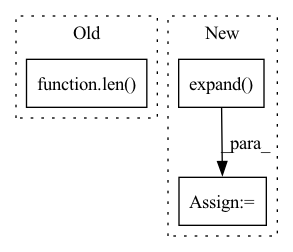

Pattern ID :31684
Before Change
w = generator.linear0.weight
eigen_vectors = torch.svd(w).V.to(z.device)[:, :num_semantic_axis]
zs_start = z.repeat(num_semantic_axis).view(-1, 1, len( z) )
zs_end = (z.unsqueeze(1) + maximum_variations*eigen_vectors).T.view(-1, 1, len(z))
zs_canvas = misc.interpolate(x0=zs_start, x1=zs_end, num_midpoints=num_cols-2).view(-1, len(z))
images_canvas = generator(zs_canvas, fake_label.repeat(len(zs_canvas)), eval=True)After Change
zs_start = z.repeat(num_semantic_axis).view(-1, 1, z_dim)
zs_end = (z.unsqueeze(1) + maximum_variations*eigen_vectors).T.view(-1, 1, z_dim)
if backbone == "big_resnet":
zs_shard = zs[z_dim:].expand( [1, 1, -1]) .repeat(num_semantic_axis, 1, 1)
zs_start = torch.cat([zs_start, zs_shard], axis=2)
zs_end = torch.cat([zs_end, zs_shard], axis=2)
zs_canvas = misc.interpolate(x0=zs_start, x1=zs_end, num_midpoints=num_cols-2).view(-1, zs_start.shape[-1])
images_canvas = generator(zs_canvas, fake_label.repeat(len(zs_canvas)), eval=True)
return images_canvasIn pattern: SUPERPATTERN
Frequency: 4
Non-data size: 3
Instances Fragment ID: 92393569
Project Name: postech-cvlab/pytorch-studiogan
Commit Name: b4e68975c4ce99a3a230f49229c1164ef4b6b84a
Time: 2021-09-16
Author: first287@naver.com
File Name: src/utils/sefa.py
M Class Name: AnonimousClass
N Class Name: AnonimousClass
M Method Name: apply_sefa(7)
N Method Name: apply_sefa(6)
M Parent Class:
N Parent Class:
M File Name: src/utils/sefa.py
N File Name: src/utils/sefa.py
M Start Line: 17
M End Line: 19
N Start Line: 12
N End Line: 27
Before Change
//print(labels[i])
for j in range(len(labels[i])):
if labels[i, j] == 1:
if j != len( labels[i]) -1:
cur_query_matrix.extend(self.memory_matrix[j*self.num_prototype:(j+1)*self.num_prototype, :])
else:
cur_query_matrix.extend(self.memory_matrix[j * self.num_prototype:, :])After Change
// Memory querying and responding for visual features
dummy_memory_matrix = self.memory_matrix.unsqueeze(0).expand( att_feats.size(0), self.memory_matrix.size(0), self.memory_matrix.size(1))
responses = self.cmn(att_feats, dummy_memory_matrix, dummy_memory_matrix)
max_num_protype = max((labels[:,-1]*3 + labels[:,:-1].sum(-1))) * self.num_prototype
query_matrix = self.memory_matrix.new_zeros(att_feats.size(0), max_num_protype, self.memory_matrix.shape[-1]) Fragment ID: 92393563
Project Name: markin-wang/xpronet
Commit Name: 4ce89afc1120d8d6dd836304f6537d139f0505f1
Time: 2021-11-23
Author: cserwj@gmail.com
File Name: modules/base_cmn.py
M Class Name: BaseCMN
N Class Name: BaseCMN
M Method Name: _prepare_feature_forward(5)
N Method Name: _prepare_feature_forward(5)
M Parent Class: AttModel
N Parent Class: AttModel
M File Name: modules/base_cmn.py
N File Name: modules/base_cmn.py
M Start Line: 400
M End Line: 417
N Start Line: 400
N End Line: 401
Before Change
with torch.no_grad():
all_updated = []
for pattern_idx in range(len( pattern_features) ):
// permutation is unique for every pattern hence cannot perform vector operations
// Padding is mixed up in the permutation, no need for additional processing
updated_feature = torch.stack([pattern_features[pattern_idx][i] for i in permutation[pattern_idx]])After Change
for _ in range(len(pattern_features.shape) - len(permutation.shape)):
extended_permutation = extended_permutation.unsqueeze(-1)
// expand just creates a new view without extra copies
extended_permutation = extended_permutation.expand( pattern_features.shape)
// collect features with correct permutation in pattern dimention
indexed_features = torch.gather(pattern_features, dim=1, index=extended_permutation)
Fragment ID: 92393562
Project Name: maria-korosteleva/garment-pattern-estimation
Commit Name: 66c717b0d59467277210e38e07f0d574af577038
Time: 2021-06-14
Author: mariako@kaist.ac.kr
File Name: nn/metrics.py
M Class Name: ComposedPatternLoss
N Class Name: ComposedPatternLoss
M Method Name: _feature_permute(2)
N Method Name: _feature_permute(2)
M Parent Class:
N Parent Class:
M File Name: nn/metrics.py
N File Name: nn/metrics.py
M Start Line: 903
M End Line: 910
N Start Line: 903
N End Line: 914
Before Change
// https://huggingface.co/transformers/internal/tokenization_utils.html//transformers.tokenization_utils_base.SpecialTokensMixin.add_tokens
tokenizer.add_tokens(wisdoms)
// https://huggingface.co/transformers/main_classes/model.html//transformers.PreTrainedModel.resize_token_embeddings
model.resize_token_embeddings(len( tokenizer) )
// https://huggingface.co/transformers/_modules/transformers/modeling_bert.html
word_embeddings: torch.nn.Embedding = model.bert.embeddings.word_embeddings
wiskeys = WisKeysBuilder(tokenizer, device)(wisdoms) // (|W|,)After Change
// 30000이 무엇을 의미하는가? - 어휘의 크기/
inputs = word_embeddings(encoded["input_ids"]) // (N, L) -> (N, L, E=H)
token_types = token_type_embeddings(encoded["token_type_ids"]) // (N, L) -> (N, L, E=H)
positions = position_embeddings(torch.arange(L).expand( N, L) )
fused = inputs + token_types + positions
print(fused) // 이것이 bert의 입력으로 들어간다.
Fragment ID: 92393565
Project Name: eubinecto/wisdomify
Commit Name: 5a03b27e6f81452ba455ffd3a19daabc799e91f9
Time: 2021-10-12
Author: eubinecto
File Name: wisdomify/examples/explore_bert_embeddings.py
M Class Name: AnonimousClass
N Class Name: AnonimousClass
M Method Name: main(0)
N Method Name: main(0)
M Parent Class:
N Parent Class:
M File Name: wisdomify/examples/explore_bert_embeddings.py
N File Name: wisdomify/examples/explore_bert_embeddings.py
M Start Line: 8
M End Line: 26
N Start Line: 17
N End Line: 55